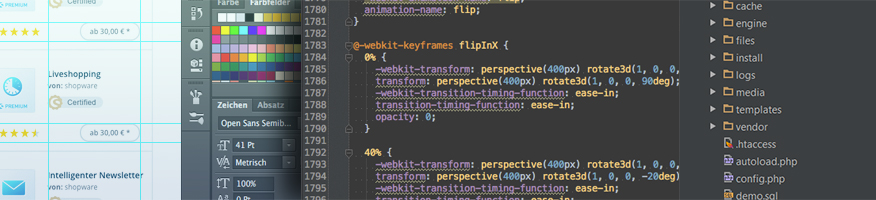

<h2>Developing Themes</h2>
<ul class="guide-list is--numbered">
    <li><a href="{{ site.url }}/designers-guide/theme-startup-guide/">Theme Startup Guide</a></li>
    <li><a href="{{ site.url }}/designers-guide/getting-started/">Getting started with Shopware templating</a></li>
    <li><a href="{{ site.url }}/designers-guide/smarty/">Getting started with Smarty</a></li>
    <li><a href="{{ site.url }}/designers-guide/less/">Getting started with LESS</a></li>
    <li><a href="{{ site.url }}/designers-guide/css-and-js-files-usage/">Using CSS and JavaScript in themes</a></li>
    <li><a href="{{ site.url }}/designers-guide/responsive-theme-default-components/">Using the Responsive theme default components</a></li>
    <li><a href="{{ site.url }}/designers-guide/javascript-statemanager-and-pluginbase">Getting started with jQuery plugins and the StateManager</a></li>
    <li><a href="{{ site.url }}/designers-guide/configuration-using-theme-php/">Using the Theme.php for custom theme configuration</a></li>
    <li><a href="{{ site.url }}/designers-guide/preparing-themes-for-the-community-store/">Preparing themes for the community store</a></li>
</ul>

<h2>General Resources</h2>
<ul class="guide-list">
    <li><a href="{{ site.url}}/designers-guide/javascript-coding-style/">JavaScript coding style</a></li>
    <li><a href="{{ site.url }}/styletile" title="Shopware UI components overview">Shopware UI components overview</a></li>
    <li><a href="{{ site.url }}/designers-guide/snippets/">Snippet management</a></li>
    <li><a href="{{ site.url }}/designers-guide/external-resources/">Embedding external resources</a></li>
    <li><a href="{{ site.url }}/designers-guide/google-pagespeed-best-practise/">Google PageSpeed</a></li>
    <li><a href="{{ site.url }}/designers-guide/responsive-images/">Working with responsive images</a></li>
    <li><a href="{{ site.url }}/designers-guide/best-practice-theme-development/">Using Grunt for theme development</a></li>
    <li><a href="{{ site.url }}/designers-guide/modify-jquery-plugins">Modify jQuery plugins</a></li>
    <li><a href="{{ site.url }}/designers-guide/managing-third-party-dependencies-with-bower/">Managing third-party dependencies with Bower</a></li>
    <li><a href="{{ site.url }}/designers-guide/managing-third-party-dependencies-with-npm/">Managing third-party dependencies with NPM</a></li>
    <li><a href="{{ site.url }}/designers-guide/legacy-template-development-in-shopware-5/">Legacy template development in Shopware 5</a></li>
    <li><a href="{{ site.url }}/designers-guide/how-to-use-karma/">How to use Karma for storefront tests</a></li>
</ul>

<h2>Tutorials</h2>
<ul class="guide-list">
    <li><a href="{{ site.url }}/designers-guide/find-smarty-blocks/">How to find Smarty blocks</a></li>
    <li><a href="{{ site.url }}/designers-guide/custom-templates/">Custom templates for category and detail pages</a></li>
    <li><a href="{{ site.url }}/designers-guide/custom-listing-page/">In-depth example: Custom listing page</a></li>
    <li><a href="{{ site.url }}/designers-guide/custom-detail-page/">In-depth example: Custom detail page</a></li>
    <li><a href="{{ site.url }}/designers-guide/edit-newsletter-and-document-templates/">Edit newsletter and document templates</a></li>
    <li><a href="{{ site.url }}/designers-guide/range-slider-algorithm">Choosing the right range slider algorithm</a></li>
    <li><a href="{{ site.url }}/designers-guide/browser-notice/">Browser notification for visitors with an outdated browser</a></li>
</ul>
